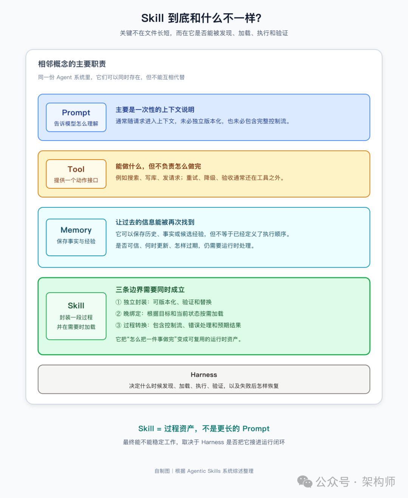
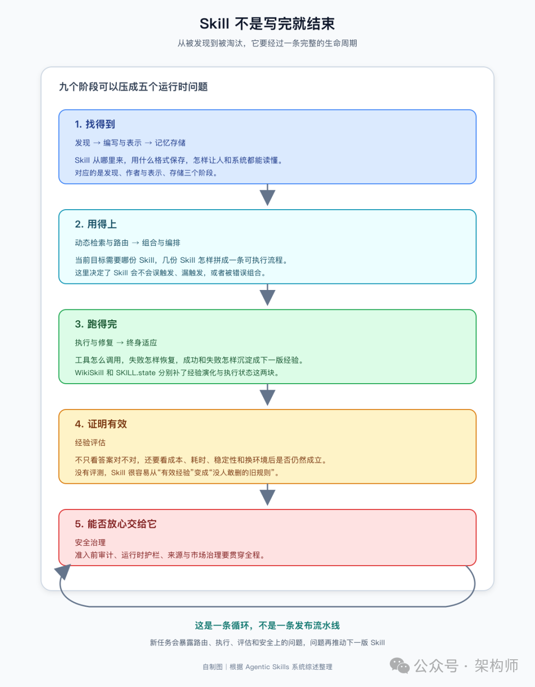
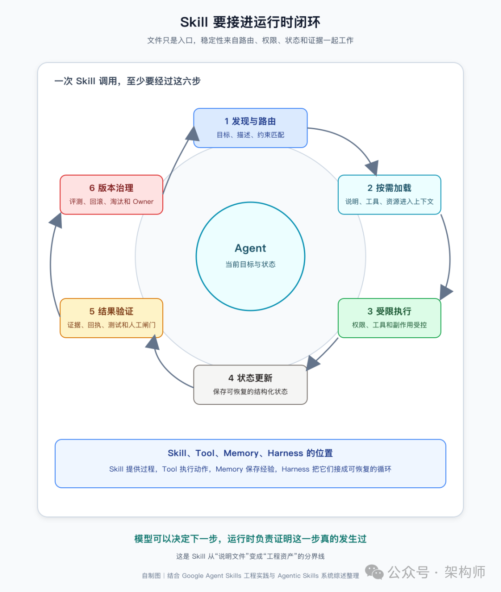

来自 Google 的 Agentic Skill 综述：Skill 六元组与九阶段生命周期
来源：微信公众号 归档日期：2026-09-17 抓取状态：成功 原文字符：7454｜配图：4 张
摘要速览
- 综述给出 Skill 形式化定义六元组：激活条件(A)、过程指令(I)、适用约束(C)、工具接口(T)、执行策略(π)、预期效果(E)，可直接当检查清单用。
- 三条判定标准：封装模块化（可独立编写、版本化、验证、更新，不改模型权重）、晚绑定动态加载（按需加载而非常驻上下文）、过程性状态转换（编码怎么做，含错误处理与控制流）。
- 只有说明缺触发与效果更像 Prompt，只有接口缺过程更像 Tool，只存历史缺执行逻辑更像 Memory。
- 安全约束形式化：Skill 激活当且仅当其声明工具集是当前上下文允许工具集的子集，否则即权限提升。
- Google 工程实践：Skill 是有统一目录、自动检查、提交时评测、每周质量检查并有人长期负责的过程资产；评测用准确率与效率 2×2 矩阵，兼顾 Token 与耗时。
核心内容
- 形式化定义（六元组）：A 激活条件 / I 过程指令 / C 适用约束 / T 工具接口 / π 执行策略 / E 预期效果——缺哪块就落入 Prompt、Tool、Memory 的近似物。
- 判定标准：模块化封装、晚绑定加载、过程性状态转换，三者齐备才构成真正的 Skill。
- 安全边界：激活 ⇔ 声明工具集 ⊆ 当前允许工具集，把 Skill 权限问题变成可判定的集合包含关系。
- 组织实践：Repo Maintainer 维护共同规则，Skill Owner 随产品/API/评测变化维护单份 Skill；架构原则优先引用远程 MCP 工具，CLI 与 API 只作兜底；发布前内部构建验证，达标后自动脱敏导出到 GitHub。
- 生命周期：九阶段覆盖经验提炼、知识长期保存、Skill 路由、状态推进、权限收口、结果验证与失败恢复。
可执行启发
- 写/审自有 Skill 时按六元组逐项自检，尤其补齐激活条件与预期效果，避免退化成 Prompt。
- 给 Skill 加评测时采用"准确率 × 效率"二维矩阵，同时盯 Token 与耗时，防止单指标对抗性优化。
归属：[[02-输入/按主题/工具与技术/_index|工具与技术]]
我的想法
（待补充）
原文沉淀
目录
- 综述先把边界划清楚了
- Google 的工程实践：Skill 是一份要持续维护的过程资产
- 九阶段生命周期：一条还没完全闭合的链路
- 综述里几个容易被忽略的细节
- WikiSkill 和 SKILL.state：补全生命周期的两块拼图
- 带回项目里的六个问题
- 以后再画架构图
- 参考资料
- 相关阅读：
架构师（JiaGouX）
我们都是架构师！ 架构未来，你来不来？
写过 SKILL.md 的团队，大概都经历过类似的落差。
文件写完了，格式也对，交给 Agent 确实能跑。过几周再看，有的被误触发，有的该用时找不到，有的跑到一半卡在中间状态，还有的因为依赖的 API 改了而悄悄失效。文件还在，能力已经不可靠了。
Google 最近公开的 Agent Skills 生产流程，和一篇由 Google 团队参与完成的 Agentic Skill 系统综述，恰好从两个方向回应了这个落差。一份是工程复盘，讲 Skill 怎么生产、测试和维护；一份是学术框架，把 Skill 拆成六元组和九阶段生命周期，试着把发现、路由、执行、评估和安全放进同一张图里。
一份来自工程线，一份来自研究线。放在同一个问题下看，它们其实都在回答：一份做事方法，怎样才算真正进入了 Agent 的运行时。
综述先把边界划清楚了
这篇综述做的第一件事，是给 Skill 一个形式化定义。
六元组：激活条件（A）、过程指令（I）、适用约束（C）、工具接口（T）、执行策略（π）和预期效果（E）。这个形式未必需要原样搬进每个项目，但它提供了一个检查清单：只有说明、没有触发和效果，更接近 Prompt；只有接口、没有过程，更接近 Tool；只保存历史、没有执行逻辑，则更接近 Memory。
这篇综述给了三条判定标准：
封装模块化。Skill 是独立的外部资产，可以单独编写、版本化、验证和更新，不需要改模型权重或全局 Harness 代码。
晚绑定动态加载。Skill 不常驻在上下文里，而是根据当前状态和目标按需加载。系统提示在会话开始时就全部注入，Skill 只在被需要时才出现。
过程性状态转换。Skill 编码的是"怎么做"的操作知识，包括错误处理和控制流，而不是记录事实或保存历史。

Agent Skill 与 Prompt、Tool、Memory、Harness 的边界
图 1：Skill 夹在上下文、工具、记忆和运行时之间，核心是封装一段可加载、可执行、可验证的过程。自制图。
用这三条标准去过滤，很多模糊地带就清楚了。一段全局 JSON 格式指令不是 Skill，因为它没有模块化和按需加载；一个搜索 API 不是 Skill，因为它没有过程编排；但一个附带超时重试、缓存降级和 DOM 解析逻辑的 API 封装，就是综述所说的"工具执行技能"。一段对话记录也不是 Skill，因为它不包含执行逻辑。
综述还给出了安全约束的形式化表述：Skill 激活当且仅当其声明的工具集是当前上下文允许工具集的子集，否则即为权限提升。这个定义把"Skill 能不能用某个工具"从口头约定变成了可检查的条件。
Google 的工程实践：Skill 是一份要持续维护的过程资产
综述回答了"到底是什么"，Google 的工程实践则展示了"怎么做"。
Google 的 Skill 不是谁写完谁提交的孤立文档。它有统一目录、自动检查、提交时评测和每周质量检查，还要有人长期负责。Repo Maintainer 维护仓库的共同规则，Skill Owner 负责某一份 Skill 随产品、API 和评测结果一起变化。
这件事听起来像常规软件工程，但对 Skill 尤其重要。普通文档过期，最多让人多查几页；过期的 Skill 可能让 Agent 直接走错工具、漏掉一个前置条件，甚至执行一个已经不适用的流程。
架构上有一条核心原则：优先引用远程 MCP 工具，CLI 和 API 调用只作为兜底。远程 MCP 服务器更容易纳入统一鉴权和 IAM 级别的权限治理，比裸调 CLI/API 更适合放进长期维护的运行环境。这和综述里"安全治理"阶段的思路是一致的，Skill 的工具声明不只是功能描述，也是权限边界。
导出规则也值得留意。Skill 先在内部构建和验证，达标后才通过自动化规则发布到 GitHub，同时剥离内部资产、Owner 信息和评测套件。同一份 Skill 在内部和外部是两个形态，公开的只是经过脱敏的一个切面。
评测不只看答案对不对。完成任务用了多少 Token、花了多长时间、这种收益在不同运行环境里是否成立，都在考察范围内。Google 用准确率和效率两个维度打出 2×2 矩阵来判断一个 Skill 到底有没有带来提升。一个 Skill 如果让结果看起来更完整，却让调用成本和失败重试一起上升，未必是改进。
从工程角度看，Skill 更像一份需要持续维护的过程资产，而不是一次性提示词。 Owner、版本、测试样例和淘汰机制，都是这个判断的自然推论。
九阶段生命周期：一条还没完全闭合的链路
综述把 Skill 的完整生命分成九个阶段：自主发现、编写与表示、记忆存储、动态检索与路由、组合与编排、执行与修复、终身适应、经验评估、安全治理。
Google 的工程实践覆盖了其中的大部分环节，但在"安全治理"和"终身适应"上还在演进。把它们压缩成运行时视角，这条链路可以写成：
发现与路由 → 按需加载 → 受限执行 → 状态更新 → 结果验证 → 版本治理

Agentic Skill 九阶段生命周期
图 2：综述里的九个阶段，可以归并成“找得到、用得上、跑得完、证明有效、能否放心交给它”五个运行时问题。自制图。
Harrison Chase 在讨论 Agent 架构时用过一个说法：harness 是"围绕模型的、可编排的执行外壳"，它决定的不是模型能说什么，而是哪些信息在什么时候以什么方式进入模型，以及模型的输出怎样被校验和落地。Skill 的工程化程度，最终取决于这条链路是否闭合，而不在于目录里有多少份 SKILL.md。
Karpathy 谈 context engineering 时也说过类似的话：工业级 LLM 应用的难点不只是写一个 prompt，而是把任务描述、资料、工具、状态、历史和压缩结果，恰当地装进下一步的上下文。Simon Willison 在讨论 Claude Skills 时补了一句：Skills 的意义不在于给模型更多文本，而在于把"什么时候需要什么"从临时判断变成了可复用的配置。
Skill 是 Context Engineering 的一个可版本化载体，但它不能替代 Context System，也不能替代 Harness。 这也解释了为什么最近反复看到两条看似相反的路线：一条强调 Markdown、文件和按需检索，另一条强调结构化状态、事件流和严格的执行协议。它们并不是在争论"文本好还是结构好"，而是在处理不同生命周期的信息。经验需要人能读、能改、能审查；当前状态需要机器能校验、能合并、能恢复；执行证据需要留档，临时推理可以过期。
综述里几个容易被忽略的细节
这份综述里还有几处容易被略过的内容，这里挑三个。
安全不是附加章节，而是贯穿全生命周期的问题。 综述指出，自然语言指令本身就是容易被注入的入口。恶意 Skill 可以携带后门、窃取凭证、绕过护栏，而且风险会穿过多个生命周期阶段。防御体系对应三层：准入前静态审计、运行时护栏、市场治理（加密溯源签名）。现实是，Skill 在调用前无法被完全验证，这正是安全问题难以一次解决的原因。
Skill 库也会产生技术债。 综述提到了 SkillOps 的五维健康度治理：剪除低价值 Skill、偿还"技能技术债"。触发描述冲突、重复流程、过期链接、失效脚本、无人维护的 Owner、越来越长的参考目录，这些问题和代码仓库的技术债没有本质区别。数量增长本身不是能力增长，能不能找到、能不能执行、能不能证明有效，才是更接近真实的指标。
Skill 的收益是有条件的。 综述引用了一项负面结果：程序性技能在网络安全 CTF 任务上零增益。论文提出了"环境反馈带宽假说"来解释：当环境本身能提供丰富诊断信息时，外置技能的边际收益递减。Skill 更适合那些环境反馈稀疏、试错成本高、领域约束强的任务，而不是所有任务都值得写成 Skill。
WikiSkill 和 SKILL.state：补全生命周期的两块拼图
综述给出了完整框架，同一天发表的两篇论文则分别填补了"终身适应"和"执行与修复"两个阶段。
WikiSkill 处理的是 Skill 的生产端。它在执行轨迹和可执行 Skill 之间插入了一层持久 Wiki：
执行轨迹 → 经验模式 → Skill 提案 → 验证闸门 → 新版本 Skill
最精妙的设计是一处不对称：Skill 可以回滚，Wiki 永不回滚。失败的提案连同拒绝理由也会留在 Wiki 里，下次提案时能看到"这个方向试过、为什么不行"。Skill 是易错的假设，Wiki 是沉淀的知识，知识不该因为一次假设失败而清零。
论文还发现了一个有意思的现象：进化后的 Skill 可以让小模型在部分任务上超过裸跑的大模型，实验里的 9B 模型就反超了 27B 模型。但跨模型迁移也可能失效：小模型沉淀的 Skill 里塞满了模型特异的 workaround，交给更强的模型后反而拖累成绩。通用程序性知识可以跨模型迁移，模型特异的补丁则可能造成负迁移。这对 Skill 的维护策略有直接影响：写 Skill 时要区分哪些是领域通用的，哪些只是针对特定模型的补丁。
SKILL.state 处理的是 Skill 的消费端。它把执行重构为显式状态转移：每一步只把不可变的 Skill 说明、结构化的当前状态和最新环境观察交给模型；模型返回状态补丁和动作；运行时校验补丁，合并出新状态，然后丢弃这一步的推理历史。单步提示词长度保持在 O(1)，累计 token 从 O(T²) 降到 O(T)。
这条边界很重要，但也不能推得太远。论文讨论的前提是结构化状态足以支持下一步决策。如果任务需要回看完整轨迹来审计，或者早期的一条观察直到很久以后才被发现重要，直接丢弃历史就可能损失信息。
状态机不是“历史都不重要”，而是要求系统提前说清楚：什么是未来执行真正需要的最小充分状态。
带回项目里的六个问题
比起先看一份 Skill 写了多少页，现在更常问的是六个问题：
- 它在什么条件下被触发，误触发和漏触发分别会带来什么代价。
- 输入和输出是什么，哪些信息还要回到权威系统确认，而不是直接相信上下文记忆。
- 哪些动作可以交给脚本或工具确定性完成，哪些判断仍然需要模型参与。
- 中途失败以后，系统怎样继续，哪些副作用可以重试，哪些在重试前需要先查询结果。
- "完成"由什么证据确认，谁有权覆盖模型的完成判断。
- 谁负责维护，怎样评测，什么时候降级、回滚或淘汰。
这不是一张写作清单，更像是把 Skill 放回软件系统以后，几个绕不过去的责任问题。不同团队的答案当然会不同，但只要其中几项始终说不清，Skill 大概率还停留在"写给模型看的说明"这一步。
高重复、边界明确、结果可验证的流程，适合沉淀成 Skill。一次性探索、事实变化很快、验收标准本身还没有形成的任务，硬写成 Skill 反而可能把临时判断固化成错误规则。Aaron Levie 在公开讨论里提到过类似判断：随着模型越来越能处理原先由工程脚手架承担的事情，架构需要持续删改，而不是只做叠加。
以后再画架构图
Google 的实践和这篇综述，一份来自生产线，一份来自学术梳理，但它们指向的方向是一致的。
以后再画 Agent 架构图，Skill 大概不会再被画成一个孤立的文件图标。它更适合被画在那条不断查找、加载、执行、验证和更新的运行循环里。

Skill 进入 Agent Runtime 的闭环
图 3：Skill 提供过程，Tool 执行动作，Memory 保存经验，Harness 把它们接成可恢复的运行时闭环。自制图。
经验怎样被提炼，知识怎样长期保存，Skill 怎样被路由，状态怎样推进，权限怎样收口，结果怎样验证，失败怎样恢复。这些问题只要缺一块，Skill 就很容易退化成一份"看起来很懂"的提示词。边界接起来以后，Skill 才有机会成为一种真正可复用的工程资产：它能被加载，也能被替换；能带来经验复利，也能在验证失败时回滚；能帮助模型做事，但不会把权限、事实和完成标准一起交给模型决定。
参考资料
- Google Cloud：Behind the scenes: How we build, test, and scale Google Agent Skills（https://cloud.google.com/blog/topics/developers-practitioners/behind-the-scenes-how-we-build-test-and-scale-google-agent-skills/）
- Google Skills GitHub 仓库（https://github.com/google/skills）
- Towards a Systems Foundation for Agentic Skills: Architecture, Lifecycle, and Security（https://arxiv.org/abs/2608.29596）
- WikiSkill: Compiling Agent Experience into Persistent Knowledge for Skill Evolution（https://arxiv.org/abs/2608.27454）
- SKILL.state: Scalable Long-Horizon Agent Skills（https://arxiv.org/abs/2608.26263）
- Andrej Karpathy：关于 context engineering 的公开讨论（https://x.com/karpathy/status/1937902205765607626）
- Simon Willison：Claude Skills are bigger than MCP（https://simonwillison.net/2025/Sep/12/claude-skills/）
- Aaron Levie：关于 Agent 时代专业能力与架构取舍的公开讨论（https://x.com/levie/status/2006521312693637597）
如喜欢本文，请点击右上角，把文章分享到朋友圈
如有想了解学习的技术点，请留言给若飞安排分享
因公众号更改推送规则，请点“在看”并加“星标”第一时间获取精彩技术分享
·END·
相关阅读：
- Loop Engineering，应该赞成还是反对？
- Claude 做方案，Codex 写代码：多模型协作怎么交接才稳
- 架构排熵：Loop Engineering 的持续清理系统
- CLAUDE.md 拆解：Agent 进仓库前的上下文入口
- Harness工程还没唱罢，Environment工程已然登场
- 设计 Self-Harness 架构：会自我改进的Harness
版权申明：内容来源网络，仅供学习研究，版权归原创者所有。如有侵权烦请告知，我们会立即删除并表示歉意。谢谢!
架构师
我们都是架构师！

关注架构师(JiaGouX)，添加“星标”
获取每天技术干货，一起成为牛逼架构师
技术群请加若飞：1321113940 进架构师群
投稿、合作、版权等邮箱：[邮箱]
归属：[[02-输入/按主题/工具与技术/_index|工具与技术]]